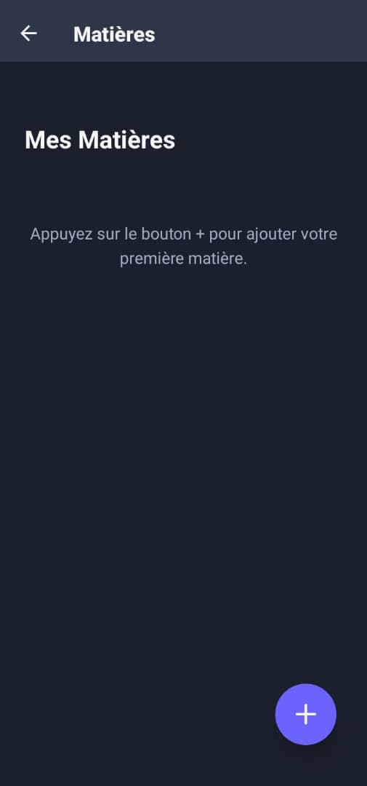
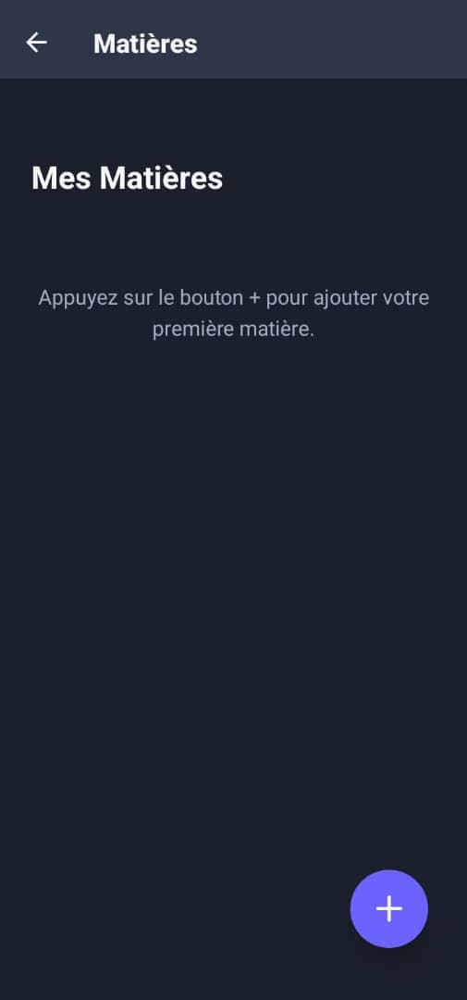
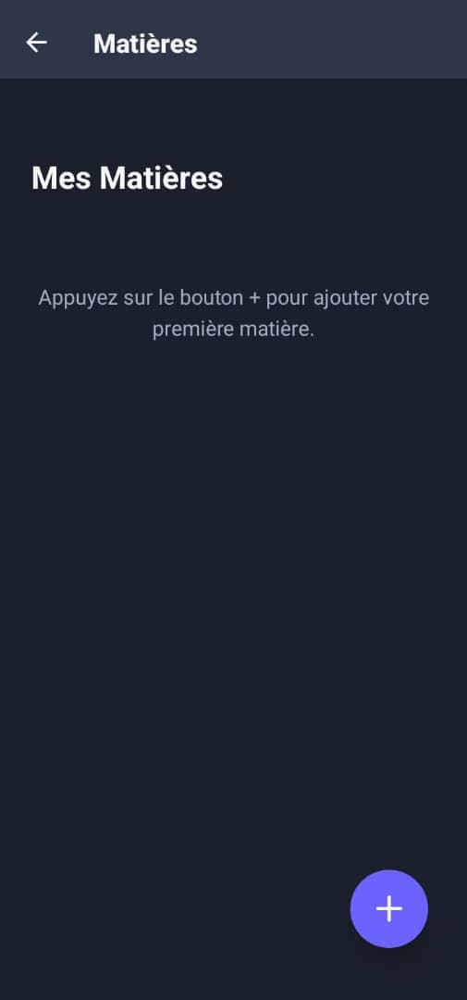

Captures d’écran


 

Le compagnon d’études intelligent pour organiser vos cours et améliorer votre productivité
Studifly est votre compagnon d’études intelligent, conçu pour aider les étudiants à organiser leurs cours, gérer leurs tâches, collaborer efficacement avec d’autres étudiants et améliorer leur productivité. Grâce à une interface intuitive et moderne, Studifly regroupe tous les outils essentiels pour réussir vos études : agenda interactif, notifications, partage de ressources pédagogiques et mode focus. Construit avec React Native, TypeScript et Supabase, Studifly offre une expérience fluide et performante sur mobile.
Planification des cours, examens et tâches avec un agenda interactif pour ne rien oublier.
Accédez et partagez vos cours, notes et fiches de révision avec simplicité.
Recevez des alertes pour les devoirs et événements importants afin de rester à jour.
Outils pour vous aider à vous concentrer sur vos priorités et maximiser votre apprentissage.

Centralisation de toutes les informations essentielles pour vos cours et devoirs.
Partage rapide des notes et documents avec vos camarades.
Notifications et rappels pour rester à jour avec vos tâches et examens.
Mode focus pour optimiser vos sessions d’étude et rester productif.
1. Créez votre compte ou connectez-vous via Supabase.
2. Ajoutez vos cours, examens et tâches dans l’agenda.
3. Partagez vos notes et ressources avec vos camarades.
4. Recevez des notifications pour vos deadlines et utilisez le mode focus pour étudier efficacement.
✅ Oui, Studifly est totalement gratuite pour tous les étudiants.
✅ Oui, vous pouvez partager vos cours et documents avec vos camarades.
✅ Oui, un compte est nécessaire pour sauvegarder vos données et accéder aux fonctionnalités de l’application.
✅ Studifly est disponible sur Android via le Playstore
L’application est open-source et disponible. Vous pouvez consulter le code, contribuer ou tester l’application contactez-moi par mail pour plus d'informations. si voyez des bugs ou des améliorations à proposer. n'hésitez pas à me contacter.